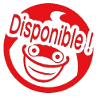

Dans mon temps libre, je n'arrive pas à me tenir tranquille sans culpabiliser du fait que je ne crée rien, donc je m'avance sur les projets ci‑dessous quand je peux.
Traduction
YO‑KAI WATCH : Wibble Wobble
Éclatez des Globulles à nouveau, et en français !
Site officiel →
Traduction
YO‑KAI WATCH 4
YO‑KAI WATCH 4 enfin en français !
Voir le projet →Traduction
Persona Q
Les Ombres du labyrinthe n'attendent que vous...
Voir le projet →Traduction

Blasters R
Je m'occupe de la traduction française intégrée.
Page Itch →Traduction
YW : ProjectTimeline
Je m'occupe de la traduction française intégrée.
Twitter/X →Traduction
YO‑KAI WATCH 1 Smartphone
(Re)découvrez YO‑KAI WATCH 1 de manière accessible en français !
Voir le projet →Traduction
Spritoglobin DX
Je m'occupe de la traduction française intégrée.
GitHub →